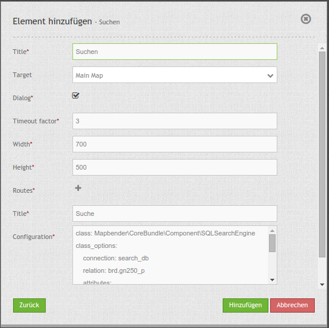

Search Router¶
Dieses Element erzeugt ein Suchformular mit Trefferausgabe. Das Formular und die Trefferausgabe sind dabei konfigurierbar. Zur Zeit wird eine generische SQL Suche unterstützt, weitere Entwicklungen werden folgen (z.B. WFS, Solr).

Konfiguration¶
{kind=link}
Die Suche greift auf Tabellen in einer Datenbank zu. Dafür muss die Datenbank in Mapbender bekannt gegeben werden. Informationen dazu finden sich unter http://doc.mapbender3.org/de/book/database.html
Hinweis: Für die Nutzung der unten beschriebenen Suche können die Tabellen aus der Digitalisierungs-Demo genutzt werden. Die SQLS für die Erstellung der Tabellen finden sich unter Digitalisierung (Digitizer)
- Title: Titel des Elements. Dieser wird in der Layouts Liste angezeigt und ermöglicht, mehrere Button-Elemente voneinander zu unterscheiden. Der Titel wird außerdem neben dem Button angezeigt, wenn “Beschriftung anzeigen” aktiviert ist.
- Target: Name/ID des Kartenelements, auf das sich das Element bezieht.
- Dialog: Einbindung als Dialog über Button oder in der Seitenleiste (Element).
- Timeout factor: Timeout-Faktor (multipliziert mit autcomplete Verzögerung), um die Autovervollständigung zu verhindern, nachdem eine Suche gestartet wurde.
- Width: Breite des Dialogs (nur für Dialog, nicht Sidepane)
- Height: Höhe des Dialogs
- Routes: Sammlung von Suchrouten.
Es können über den Button + mehrere Suchen (Routes) erstellt werden. Jede Suche erhält im Feld title einen Titel, über den die Suche in der Anwendung in einer Auswahlbox selektierbar ist.
Die Definition der Suche erfolgt im yaml-Syntax in einem Textfeld. Hier wird die Suchtabelle/Abfrage, die Datenverbindung, der Formularaufbau und die Trefferausgabe definiert.
Beispiel einer Such-Konfiguration im Textfeld Configuration:
class: Mapbender\CoreBundle\Component\SQLSearchEngine
class_options:
connection: search_db
relation: ortschaften
attributes:
- gid
- ortsname
geometry_attribute: geom
form:
ortsname:
type: text
options:
required: true
compare: exact
results:
view: table
count: true
headers:
gid: ID
ortsname: Name
callback:
event: click
options:
buffer: 10
minScale: null
maxScale: null
YAML-Definition¶
In der mapbender.yml Datei:
target: map # ID des Kartenelements
asDialog: true # true, Erebniswiedergabe in einem Dialogfeld
timeoutFactor: 3 # Timeout-Faktor (multipliziert mit autcomplete Verzögerung) um die Autovervollständigung zu verhindern, nachdem eine Suche gestartet wurde
height: 500 # Höhe des Dialogs
width: 700 # Breite des Dialogs
routes: # Sammlung von Suchrouten
demo_polygon: # für Maschinen lesbarer Name
class: Mapbender\CoreBundle\Component\SQLSearchEngine # Suchmaschine, die verwendet werden soll
class_options: # Diese werden an die Suchmaschine weitergegeben
connection: digi_suche # search_db # DBAL Verbindungsname, der benutzt werden soll, benutzen sie ~ für default
relation: polygons # Verbindungsauswahl, Unterabfragen können verwendet werden
attributes:
- gid # Liste von Spalten auswählen, expressions are possible
- name
- type
geometry_attribute: geom # Name der Geometriesplate, die genutzt werden soll. Achtung: Projektion muss mit Projektion des map-Elements übereinstimmen
form: # Einstellungen für das Suchformular
name: # Feldname, Spaltenname der genutzt werden soll
type: text # Eingabefeld, normalerweise Text oder Zahlen
options: # Einstellungen für das Eingabefeld
required: false # HTML5 benötigte Attribute
label: Name # benutzerdefinierte Beschriftung eingeben, sont wird die Beschriftung von dem Feldnamen abgeleitet
attr: # HTML5 benötigte Attribute
data-autocomplete: on # Attribut, um Autovervollständigung zu aktivieren
data-autocomplete-distinct: on # Attribut, dass Autovervollständigung aktiviert aber unterscheiden lässt
data-autocomplete-using: type # komma separierte Liste von anderen Eingabefeldern, in denen WHERE Angaben für die Autovervollständigung gemacht werden
compare: ilike # Siehe unten für weitere Vergleichsformen
type:
type: choice
options:
empty_value: Please select a type.
required: false
choices:
A: A
B: B
C: C
D: D
E: E
results:
view: table # Ansicht der Ergebnisse, Ausgabe z.B. als Tabelle
count: true # Anzahl der Treffer anzeigen
headers: # hBezeichnung der Tabellenüberschriften und der entsprechenden Ergebnisspalten
gid: ID # Spaltenname -> Überschrift
name: Name
type: Type
callback: # Was beim Klick und Mauszeiger halten passiert
event: click # Ergebnisliste (click oder mouseover)
options:
buffer: 10 # Puffert die Geometrieergebnise (Karteneinheiten) vor dem Zoomen
minScale: ~ # Maßstabsbegrenzung beim Zoomen, ~ für keine Begrenzung
maxScale: ~
results:
styleMap: # Siehe unten für weitere Styles
default:
strokeColor: '#00ff00'
strokeOpacity: 1
fillOpacity: 0
select:
strokeColor: '#ff0000'
fillColor: '#ff0000'
fillOpacity: 0.4
Für das Element wird ein Button oder die Sidepane verwendet. Zu der Konfiguration des Buttons besuchen Sie die Dokumentationsseite unter Button.
Vergleichsmodus¶
Für jedes Feld kann ein Vergleichsmodus bestimmt werden, welcher von der Engine verwendet werden soll, wenn die Suchanfrage gestellt wird. Die SQL Suche Engine hat die folgenden Modi:
- exact: genauer Vergleich, Schlüssel = Wert (key = val)
- iexact: Vergleich, bei der Groß- / Kleinschreibung nicht unterschieden wird (case-insensitive)
- like: Standard, zweiseitiges ‘like’
- like-left: linksseitiges ‘like’
- like-right: rechtsseitiges ‘like’
- ilike: zweiseitiges ‘like’, bei dem Groß- / Kleinschreibung nicht unterschieden wird (case-insensitive - searchstring)
- ilike-left: linksseitiges ‘like’, bei dem Groß- / Kleinschreibung nicht unterschieden wird (case-insensitive - *searchstring)
- ilike-right: rechtsseitiges ‘like’, bei dem Groß- / Kleinschreibung nicht unterschieden wird (case-insensitive - searchstring*)
Styling der Ergebnisse¶
Standardmäßig werden die Ergebnisse in der Karte in dem default-OpenLayers Style angezeigt, d.h. orange für die Treffer und blau für selektierte Objekte. Sie können diese Farbgebung überschreiben, indem Sie eine styleMap-Konfiguration übergeben, die wie folgt aussehen könnte:
results:
styleMap:
default:
strokeColor: '#00ff00' # Umrandungsfarbe
strokeOpacity: 1 # 1 - opak (keine Transparenz)
strokeWidth: 3 # Umrandingsbreite
fillColor: '#f0f0f0' # Füllfarbe
fillOpacity: 0 # Opazität Füllung, voll transparent, daher keine Füllung
pointRadius: 6 # Größe des Punktsymbols
select:
strokeColor: '#0000ff'
strokeOpacity: 1
strokeWidth: 4
fillColor: '#ff00ff'
fillOpacity: 0.8
pointRadius: 10
Die Definition zeichnet nicht die Füllung von Polygonen, sondern nur die Umrandung, da die Füllung transparent gesetzt wird (fillOpacity: 0). Selektierte Objekte werden dagegen mit einer Opazität gezeichnet.
Die default-Angaben überschreiben die OpenLayers-Standardangaben. Daher müssen Sie lediglich die Angaben setzen, die Sie überschreiben möchten. Wenn Sie die Angaben weglassen wird der OpenLayers default-Stil verwendet.
Die gleiche Logik wird beim select-Stil verfolgt. Jede Angabe, die Sie machen überschreibt die Angaben des finalen default Stils.
Beachten Sie, dass die hexadezimalen Farbwerte in Anführungszeichen angegeben werden müssen, da das #-Zeichen ansonsten als Kommentar interpretiert wird.
Das folgende Beispiel erzeigt grüne (ungefüllte) Objekte und stellt das selektierte Objekt in rot dar:
results:
styleMap:
default:
strokeColor: '#00ff00'
strokeOpacity: 1
fillOpacity: 0
select:
strokeColor: '#ff0000'
fillColor: '#ff0000'
fillOpacity: 0.4
Beispiele¶
Beispiel mit Autovervollständigung und individueller Ergebnisanzeige:
Create or Replace view brd.qry_gn250_p_ortslage as Select gid, name, gemeinde, bundesland, oba, ewz_ger, hoehe_ger ,geom from brd.gn250_p where oba = 'AX_Ortslage' order by name;
class: Mapbender\CoreBundle\Component\SQLSearchEngine
class_options:
connection: search_db
relation: brd.qry_gn250_p_ortslage
attributes:
- gid
- name
- gemeinde
- bundesland
- ewz_ger
- hoehe_ger
geometry_attribute: geom
form:
name:
type: text
options:
required: false
label: Name
attr:
data-autocomplete: on
compare: ilike
gemeinde:
type: text
options:
required: false
compare: ilike
results:
view: table
count: true
headers:
name: Name
gemeinde: Gemeinde
bundesland: Bundesland
ewz_ger: Einwohner
hoehe_ger: Höhe
callback:
event: click
options:
buffer: 1000
minScale: null
maxScale: null
styleMap:
default:
strokeColor: '#00ff00'
strokeOpacity: 1
fillOpacity: 0
select:
strokeColor: '#ff0000'
fillColor: '#ff0000'
fillOpacity: 0.8
Beispiel mit Auswahlbox:
Create or Replace view brd.qry_gn250_p as Select gid, name, gemeinde, bundesland, oba, geom from brd.gn250_p where oba = 'AX_Ortslage' OR oba = 'AX_Wasserlauf' order by name;
class: Mapbender\CoreBundle\Component\SQLSearchEngine
class_options:
connection: search_db
relation: brd.qry_gn250_p_ortslage
attributes:
- gid
- name
- gemeinde
- bundesland
- oba
geometry_attribute: geom
form:
oba:
type: choice
options:
empty_value: 'Bitte wählen...'
choices:
AX_Ortslage: Ort
AX_Wasserlauf: 'Gewässer'
name:
type: text
options:
required: false
label: Name
attr:
data-autocomplete: on
compare: ilike
gemeinde:
type: text
options:
required: false
compare: ilike
results:
view: table
count: true
headers:
name: Name
gemeinde: Gemeinde
bundesland: Bundesland
callback:
event: click
options:
buffer: 1000
minScale: null
maxScale: null
Class, Widget & Style¶
- Class: Mapbender\CoreBundle\Element\SearchRouter
- Widget: mapbender.element.searchRouter.js, mapbender.element.searchRouter.Feature.js, mapbender.element.searchRouter.Search.js
- Style: mapbender.element.searchRouter.css
HTTP Callbacks¶
<route_id>/autocomplete¶
Automatisch vervollständigter Ajax Endpunkt für die vorgegebene Suchroute. Die Autovervollständigung wird unter Verwendung von Backbone.js eingesetzt. Das Autovervollständigung-Modul ist implementiert in mapbender.element.searchRouter.Search.js.
<route_id>/search¶
Automatisch vervollständigter Ajax Endpunkt für die vorgegebene Suchroute. Die Suche wird unter Verwendung von Backbone.js eingesetzt. Das Such-Modul ist implementiert in mapbender.element.searchRouter.Search.js.
JavaScript API¶
open¶
Wenn das Modul als Dialog konfiguriert wird: open.
close¶
Wenn das Modul als Dialog konfiguriert wird: close.
JavaScript Signals¶
Keine.